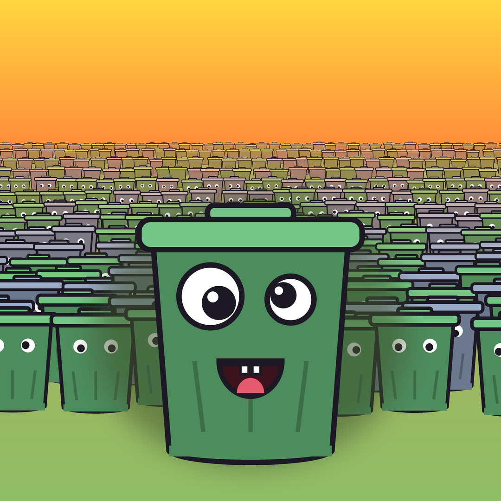

WAY TOO
MANY
10,000 enemies. One silly weapon. A portrait, one-thumb horde-survival game for phones, built around 2–3 minute runs where the screen fills up with way too much.
THE IDEA
You play with one thumb. Your weapon fires on its own; all you do is move. The game is about the moment a crowd that big starts to break: cans flying, the horde scattering, a kill counter that will not stop climbing.
WHERE IT IS
The game is built in gates: nothing new gets built until the current gate passes. It is an early prototype with blockout art; there is no release date and nothing to download yet.
Gate 1: crowd tech
10,000 enemies at a steady 60 fps on a Xiaomi 11T Pro, with a leaf blower pushing them around.
Gate 2: feel & audio
One level, no meta. Hit feedback, juice and sound until the 10-second moment is fun on its own.
Content & launch
More weapons, upgrades and levels, then Android first and iOS after.
DEVLOG
Building it in public: the tech, the numbers, and what goes wrong.

10,000 enemies at 60 fps on a 2021 phone
How the first gate passed: a C++ crowd simulation in Godot, one draw call per enemy type, and why the frame-time number that mattered came from the display, not the game.